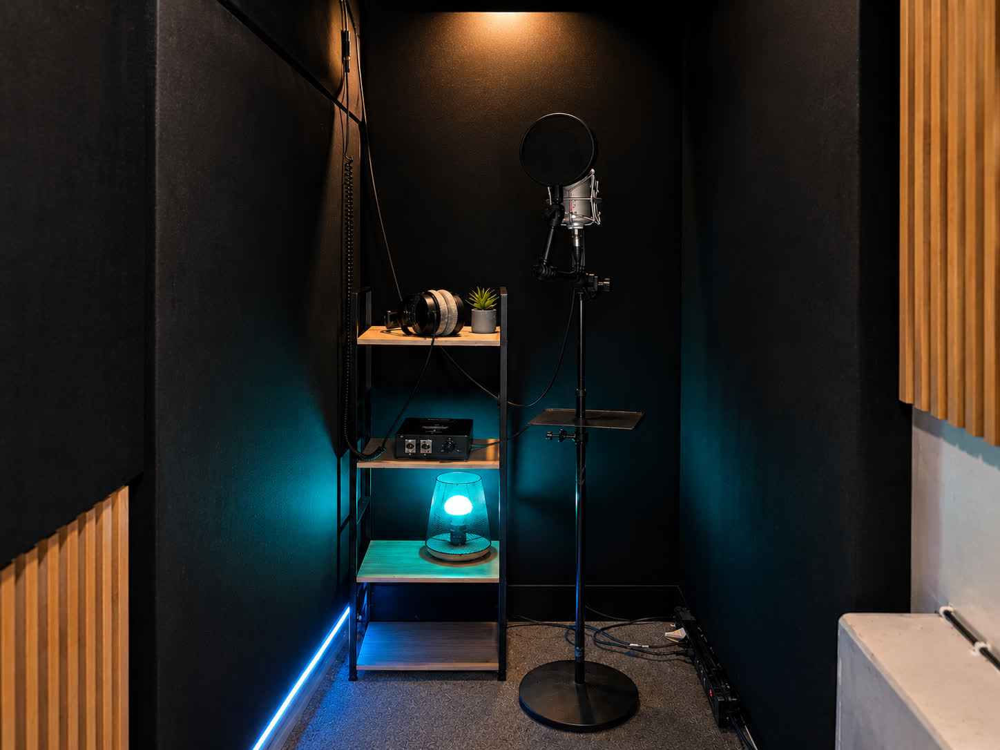

Mastering en ligne pour l’Afrique : prêt pour toutes les plateformes
Un titre bien mixé mais mal masterisé perd en impact au moment de sortir. Le mastering en ligne chez Urbe Studio met votre son au niveau streaming, où que vous soyez en Afrique, sans déplacement.

Pourquoi le mastering fait la différence
Le mastering ajuste le niveau sonore final, la cohérence des fréquences et la compatibilité de votre titre sur toutes les plateformes — Spotify, Deezer, Boomplay, Audiomack, YouTube. Sans ce passage, un mix peut sonner plus faible que la concurrence, même s'il est bien mixé.
Comment ça marche à distance
- Vous envoyez votre mix final, où que vous soyez.
- Analyse du niveau et de la balance spectrale par un ingénieur dédié.
- Ajustement pour le streaming : loudness cohérent, aucune perte à la conversion.
- Livraison rapide, urgence 48h possible.
Mixage et mastering, un vrai combo
Le mastering seul ne rattrape pas un mix mal équilibré : c'est pour cela qu'Urbe Studio propose les deux ensemble — et le mastering passe à -50 % lorsqu'il accompagne un mix.
Mastering par pays
Où que vous soyez — Cameroun, Mali, RDC, Bénin, Burkina Faso ou Guinée — le processus est identique : envoi en ligne, ingénieur dédié, titre prêt à sortir sur les plateformes locales et internationales.
Fais masteriser ton titre, prêt pour le streaming
Mastering 50€/titre · -50% avec un mix · 100% à distance
Commander mon mastering →